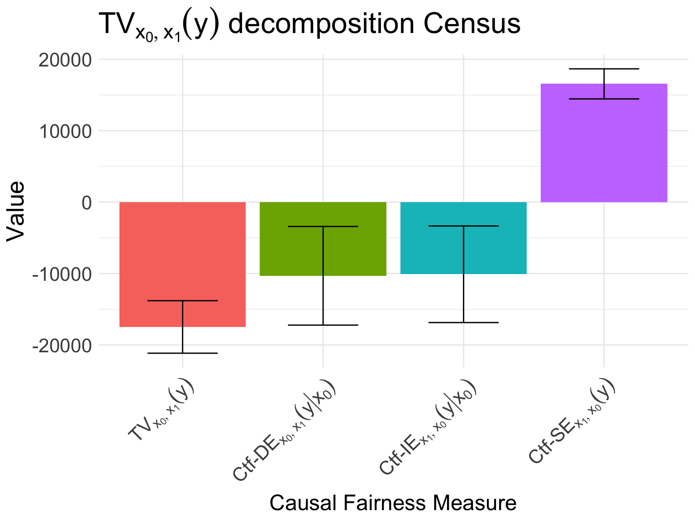

The United States Census of 2018 collected broad information about the US Government employees, including demographic information \(Z\) (\(Z_1\) for age, \(Z_2\) for race, \(Z_3\) for nationality), gender \(X\) (\(x_0\) female, \(x_1\) male), marital and family status \(M\), education information \(L\), and work-related information \(R\).
A data scientist loads the data and performs the following initial analysis:
data <-get(data("gov_census", package ="faircause"))data <-as.data.frame(data[seq_len(20000)])knitr::kable(head(data), caption ="Census dataset.")
Census dataset.
sex
age
race
hispanic_origin
citizenship
nativity
marital
family_size
children
education_level
english_level
salary
hours_worked
weeks_worked
occupation
industry
economic_region
male
64
black
no
1
native
married
2
0
20
0
43000
56
49
13-1081
928P
Southeast
female
54
white
no
1
native
married
3
1
20
0
45000
42
49
29-2061
6231
Southeast
male
38
black
no
1
native
married
3
1
24
0
99000
50
49
25-1000
611M1
Southeast
female
41
asian
no
1
native
married
3
1
24
0
63000
50
49
25-1000
611M1
Southeast
female
40
white
no
1
native
married
4
2
21
0
45200
40
49
27-1010
611M1
Southeast
female
46
white
no
1
native
divorced
3
1
18
0
28000
40
49
43-6014
6111
Southeast
tapply(data$salary, data$sex, mean)
female male
49741.66 64795.35
Therefore, the data scientist observed that male employees on average earn $14000/year more than female employees, that is \[
E[y \mid x_1] - E[y \mid x_0] = \$14000.
\]
Following the Fairness Cookbook, the data scientist does the following:
SFM projection: the SFM projection of the causal diagram \(\mathcal{G}\) of this dataset is given by \[
\Pi_{\text{SFM}}(\mathcal{G}) = \langle X = \lbrace X \rbrace, Z = \lbrace Z_1, Z_2, Z_3 \rbrace, W = \lbrace M, L, R\rbrace, Y = \lbrace Y \rbrace\rangle.
\] She then inputs this SFM projection into the faircause R-package,
fc_census <-fairness_cookbook(data, X = mdata$X, Z = mdata$Z, W = mdata$W,Y = mdata$Y, x0 = mdata$x0, x1 = mdata$x1)autoplot(fc_census, decompose ="xspec", dataset ="Census")

Figure 1: Fairness Cookbook on the Census dataset.
Using these results, she considers the following:
Disparate treatment: when considering disparate treatment, she computes \(x\text{-DE}^{\text{sym}}_{x}(y \mid x_0)\) and its 95% confidence interval to be \[
x\text{-DE}^{\text{sym}}_{x}(y \mid x_0) = \$9980 \pm \$1049.
\] The hypothesis \(H_0^{(x\text{-DE})}\) is thus rejected, providing evidence of disparate treatment of females.
Disparate impact: when considering disparate impact, she notice that Ctf-SE, Ctf-IE and their respective 95% confidence intervals equal: \[
\begin{align}
x\text{-IE}^{\text{sym}}_{x}(y \mid x_0) &= \$5126 \pm \$778,\\
x\text{-SE}_{x_1, x_0}(y) &= -\$1675 \pm \$955.
\end{align}
\] The data scientist decides that the differences in salary explained by the spurious correlation of gender with age, race, and nationality are not considered discriminatory. Therefore, she tests the hypothesis \[H_0^{(x\text{-IE})}: x\text{-IE}^{\text{sym}}_{x}(y \mid x_0) = 0,\] which is rejected, indicating evidence of disparate impact on female employees of the government. The measures computed in this example are visualized in Figure 1.